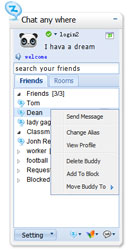
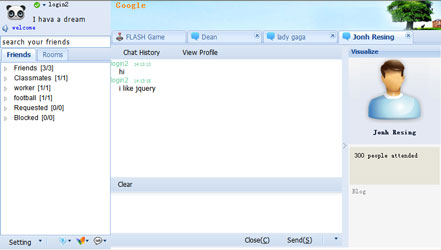
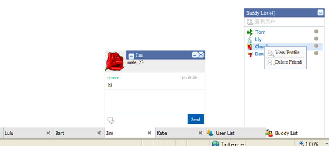

关于本页面
通过本页面你可以链接到两个不同版本的Embed WIM.两个版本的WIM都拥有如下特点：
-
采用嵌入式方式突破以往模式,让你的产品随处可见
-
经过多次的测试， 功能完善, 运行稳定, 无JS错误.
-
Cross-Broswer:Support IE6.0+, FF2.0+, Safari3.0+, Opera9.0+, Chrome2.0+.
-
使用Javascript语言, 采用Object-Oriented的设计 架构清晰合理.
-
在实现功能的同时精简代码, gzip后非常之小
-
Base Comet, only need one keep-alive connection, 保证实时性
-
UI与逻辑分离, 只需指定theme参数就可改变产品皮肤.
某站点的管理员只需要做些简单的配置, 在网页内部加入一个script标签, 刷新后即可在网页上拥有一个类客户端的功能齐全的聊天软件
除上面所诉特点外, 该模式还拥有如下特点:
-
本样式适当采用pop-up window来完成与用户之间的交互，不占用原站点网页的空间，同时更为强大， 是在用户关掉原网页后,还可以继续在弹出窗口中聊天
-
不需要原网站编程,配置极其简单
-
拥有群聊/群内成员级别管理/群类型设置等功能.
-
展示空间大，灵活性高, 易拓展
-
在关闭原页面后，弹出窗口会在客户(Client)自动加载好友列表,减少与服务端(Server)交互.
-
极大精简EXT2.0类库, GZIP后只30K.

该模式可让网站自身的用户直接在站内聊天增强用户间的粘度, 提高网站流量. 同时可以提供更多
的订制服务，例如可以绑定现有的IM, 让用户即可和站内好友聊天,又可以和IM原有好友聊天.
该样式除上面所诉特点外, 还拥有如下特点：
-
用户可以与站内好友和IM好友同时聊天.
-
可以在多页面同时使用, 并且保证只会与服务端建立一个keep-alive connection,节省资源.同时又可保证这些页面数据的同步
-
界面简单，运行更加稳定, 易于拓展与个性化订制.
-
使用Client-Storage技术保存较近的聊天记录.
-
代码量非常之小 CSS+JS+IMAGE所有下载文件GZIP后只50K.

您看到的DEMO是无后台服务的纯前台展示的,所以部分功能在DEMO中是看不到的,请谅解
联系方式:
email : norristong_x@qq.com